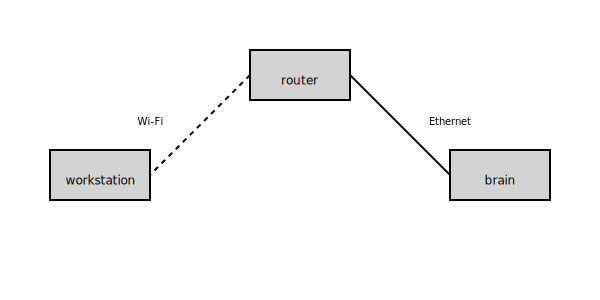

11 March 2025
As part of my day job, I've been working more than usually with SSH, working with remote connections to robots and creating SSH tunnels to handle (semi-)complex networking set-ups. I kept forgetting certain parts of my set-up every time I had to do this again, so I took some notes and decided to share them here.
This post contains information on:
The robot set-up I most recently worked on has a router (we'll give it the hostname router) and a mini-PC connected to the router via ethernet (we'll give it the hostname brain, because it's where the robot application code is run.) We connect to router from our personal workstation over Wi-Fi. Let's assume everything is running Ubuntu 24.

Let's say router is at the address 10.10.120.1 and brain at 10.10.42.57 (on router's network). We have an account user on both computers.
The first step is to set up an SSH configuration file, typically stored in ~/.ssh/config.
Let's set it up so that we can simply use the command ssh router instead of ssh user@10.10.120.1.
$ cat ~/.ssh/config
Host router
Hostname 10.10.120.1
User user
Host brain
Hostname 10.42.0.57
User user
ProxyJump router
Note that brain uses a ProxyJump via router, so that we can simply use ssh brain instead of having to go through the router manually.
Right now, we always need to manually enter user's password (and twice if we SSH into brain). Let's use keys to authenticate instead.
To generate a new key pair, we can use:
$ ssh-keygen -t ed25519
We don't want to store our private key in plain text, so enter a passphrase. We also don't want to have to enter this passphrase every time we use our key, so let's add it to the SSH agent:
$ ssh-add ~/.ssh/id_ed25519
The remote server must know about our public key. We shouldn't just copy it over there, but use these commands to do this securely:
$ ssh-copy-id user@router
$ ssh-copy-id user@brain
The keys will now be on the remote computers under ~/.ssh/authorized_keys.
Now we can enter ssh brain or ssh router and not have to enter any passphrases!
Let's say brain is running a service on some port, that we wish to connect to from our workstation directly. We can use an SSH tunnel for that.
For example, we want to use ports 7000 and 7001 as if the service was running on our workstation.
$ ssh -N -L localhost:7000:brain:7000 -L localhost:7001:brain:7001 router
-N suppresses the output, and we add -L for every port. This command should "hang".
Now we can go to localhost:7000 (resp. localhost:7001) to access this service!
I recommend turning this into an alias, e.g.,
$ alias tun_brain="ssh -N -L localhost:7000:brain:7000 -L localhost:7001:brain:7001 router"
so we can just use
$ tun_brain
instead of remembering the tunnel command.
Let's say we want to run a graphical application on brain or router as if it were running on our own workstation. We can use X forwarding for that (assuming we're using X11 :).)
$ cat ~/.ssh/config
Host router
Hostname 10.10.120.1
User user
ForwardX11 yes
Host brain
Hostname 10.42.0.57
User user
ProxyJump router
ForwardX11 yes
Now we can run, e.g., nautilus and get a graphical file browser on router or brain. Not the most useful application, but useful for other applications such as gnome-control-center to change settings.
Finally, we want to be able to use git on the remote servers. But, remember how we shared an account with other people? We can use the SSH agent to securely transfer our keys on demand.
All we have to do is change our config again.
$ cat ~/.ssh/config
Host router
Hostname 10.10.120.1
User user
ForwardX11 yes
ForwardAgent yes
Host brain
Hostname 10.42.0.57
User user
ProxyJump router
ForwardAgent yes
Now we can use git on the remote computers without needing to store our private keys.